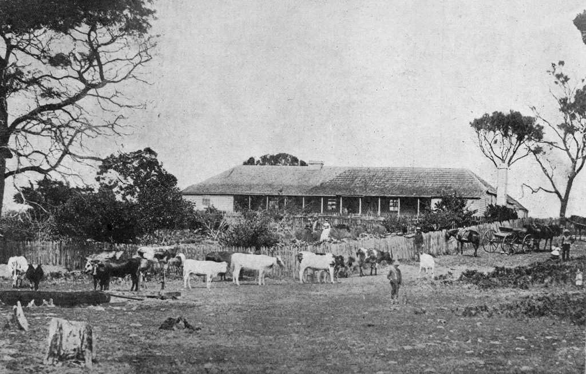
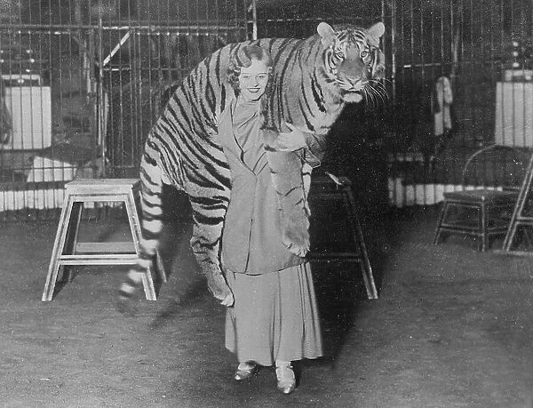

In the early 1890s, sheep began to vanish around the small town of Tantanoola, in regional South Australia.
Years prior, a travelling circus between the towns of Millicent and Mt Gambier, South Australia set camp for the night. When dawn broke, the horrifying discovery that a Bengal tiger within the circus ranks had escaped into the Australian bush.
